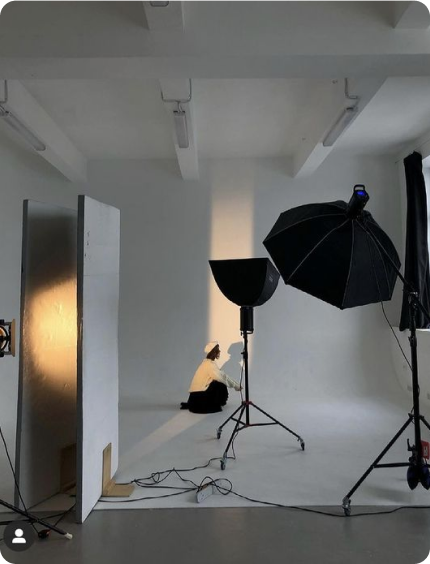
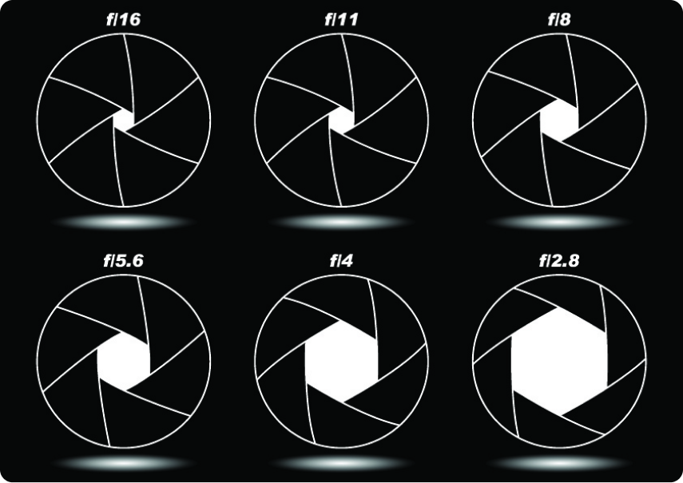

Какая фотокамера лучше подойдёт "лично для меня"
и что выбрать — вот ключевой вопрос многих новичков.
Основы фотографии для начинающих — это знание фотоаппарата и умение сделать технически правильный снимок; фотолюбитель, кроме этого, должен владеть некоторым набором творческих приёмов.
Основы фотографии для начинающих — это знание фотоаппарата и умение сделать технически правильный снимок; фотолюбитель, кроме этого, должен владеть некоторым набором творческих приёмов.
Композиция - это расположение объектов в кадре.
Хорошая композиция может сделать фотографию более интересной и
убедительной. Один из наиболее распространенных приемов композиции -
это правило третей, которое предполагает разделение кадра на девять
равных частей с помощью сетки и размещение
главного объекта фотографии вблизи одной из линий или пересечений.

Освещение играет ключевую роль в фотографии. Различные типы освещения,
такие как естественное освещение (дневной свет) или искусственное
освещение (вспышка, осветительные приборы), могут создавать различные
эффекты и атмосферу в фотографии.
Важно учитывать направление, интенсивность и цвет освещения при съемке.
Фокусировка - это процесс получения четкого изображения.
Выбор точки фокусировки и глубины резкости определяет,
какие объекты будут наиболее резкими на фотографии.
Использование различных методов фокусировки, таких как
автоматическая фокусировка или ручная фокусировка,
может помочь достичь желаемых результатов.
Диафрагма контролирует количество света, попадающего на
фоточувствительный материал или сенсор путем регулирования
размера отверстия в объективе камеры. Значение диафрагмы
(или числовое значение f-числа) также влияет на глубину резкости
фотографии. Маленькое числовое значение (например, f/1.8) создает
малую глубину резкости с размытым фоном, в то время как большое
числовое значение (например, f/16) создает большую глубину резкости с более резким фоном.

Это только некоторые основы фотографии, и существует множество других
аспектов и техник, которые можно изучить и применить при создании
фотографий. Экспериментируйте, изучайте и наслаждайтесь процессом
фотографирования, чтобы развивать свое мастерство и создавать великолепные снимки.